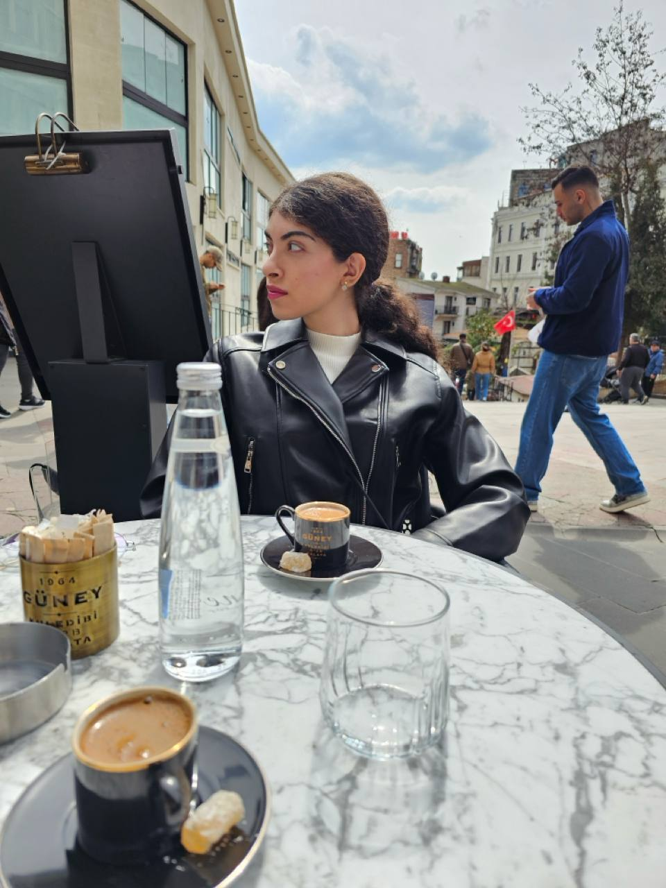

ABOUT
Curious about how systems work underneath.

Hi, I’m Partow.
I’m a Computer Science undergraduate at Shahid Beheshti University with interests in Machine Learning, Data Science, Digital Image Processing, Algorithms, and Software Development. My projects span predictive maintenance, deep learning, graph algorithms, concurrent programming, and client–server systems.
I also enjoy teaching programming and helping students understand the structure behind a problem, not just the final code.
18.88
Cumulative GPA / 20
2023
B.Sc. start
SKILLS
Tools I use to build and understand.
Machine Learning / Data
Python
Pandas
NumPy
Scikit-learn
PyTorch
TensorFlow
XGBoost
SHAP
Software Engineering
Java
C++
OOP
Concurrency
Sockets
PostgreSQL
Visualization
Matplotlib
Plotly
Streamlit
Tools
Git
GitHub
Jupyter
VS Code